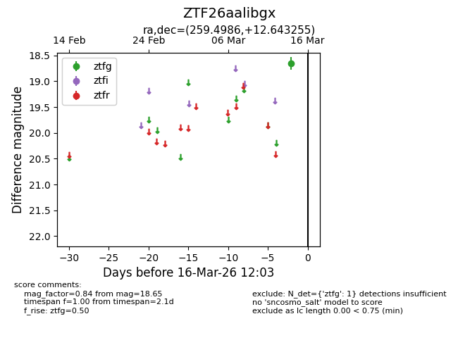
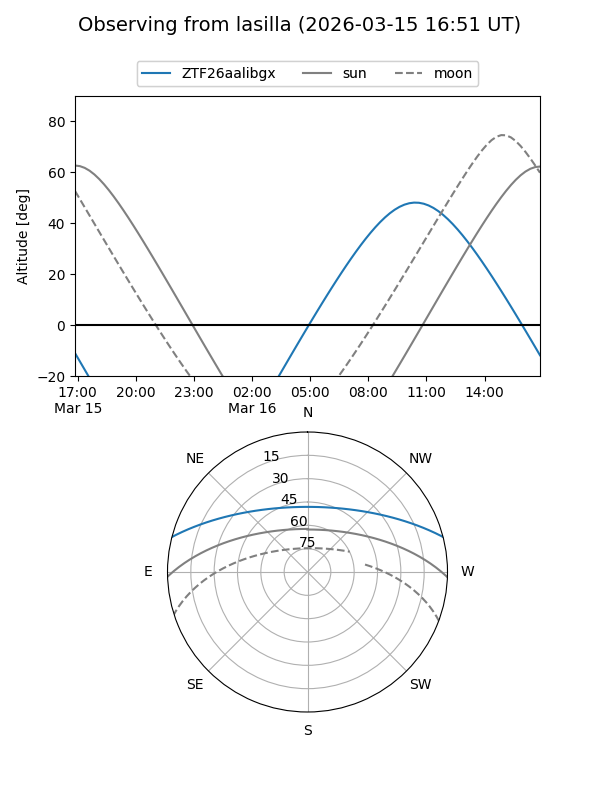
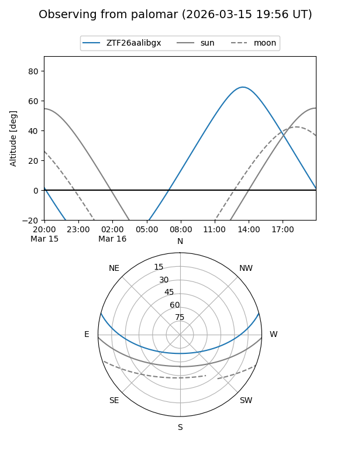

ZTF26aalibgx
Target ZTF26aalibgx at 2026-03-16 12:05
Aliases and brokers:
FINK: link
Lasair: link
ALeRCE: link
alt names
ZTF26aalibgx (ztf,fink_ztf)
Coordinates:
equatorial (ra, dec) = 259.4986,+12.64326
equatorial (HMS+DMS) = 17:17:59.66,+12:38:35.72
galactic (l, b) = (34.1072,+26.36882)
Flags:
Photometry:
last ztfg=18.65
1 ztfg detections
Lightcurve

Visibility


Additional plots